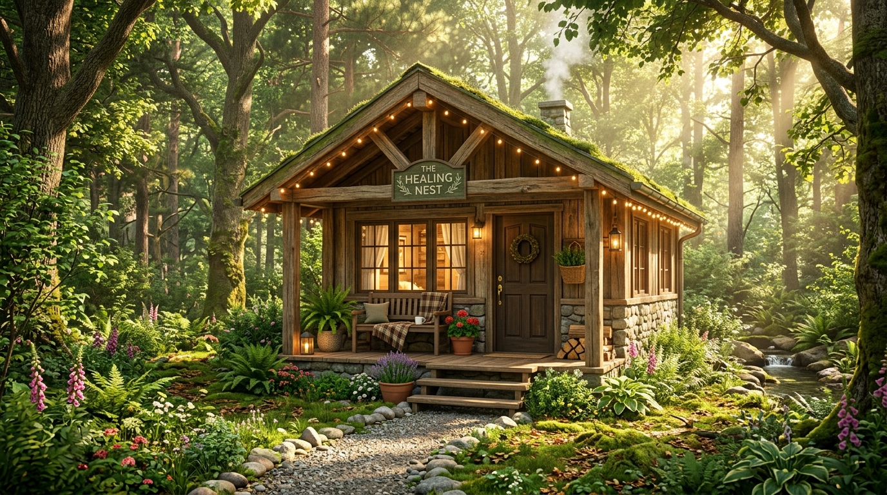
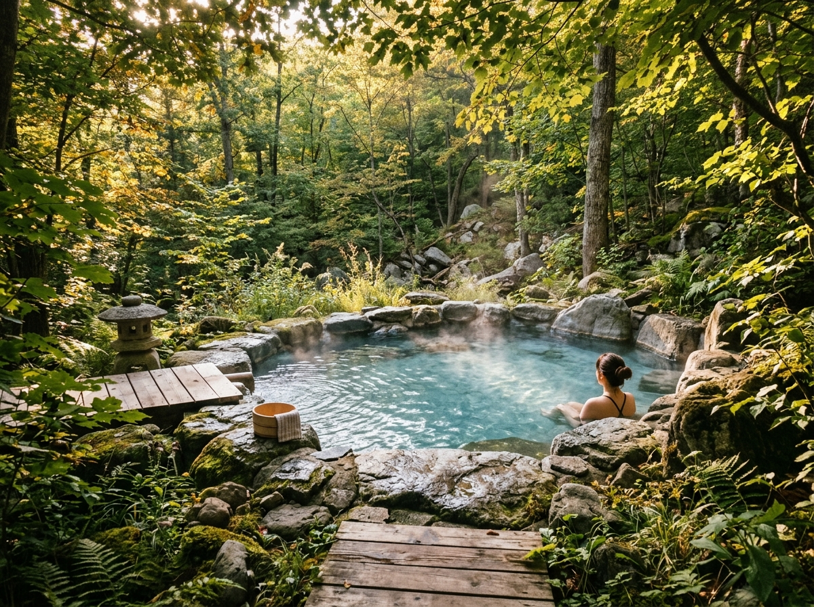
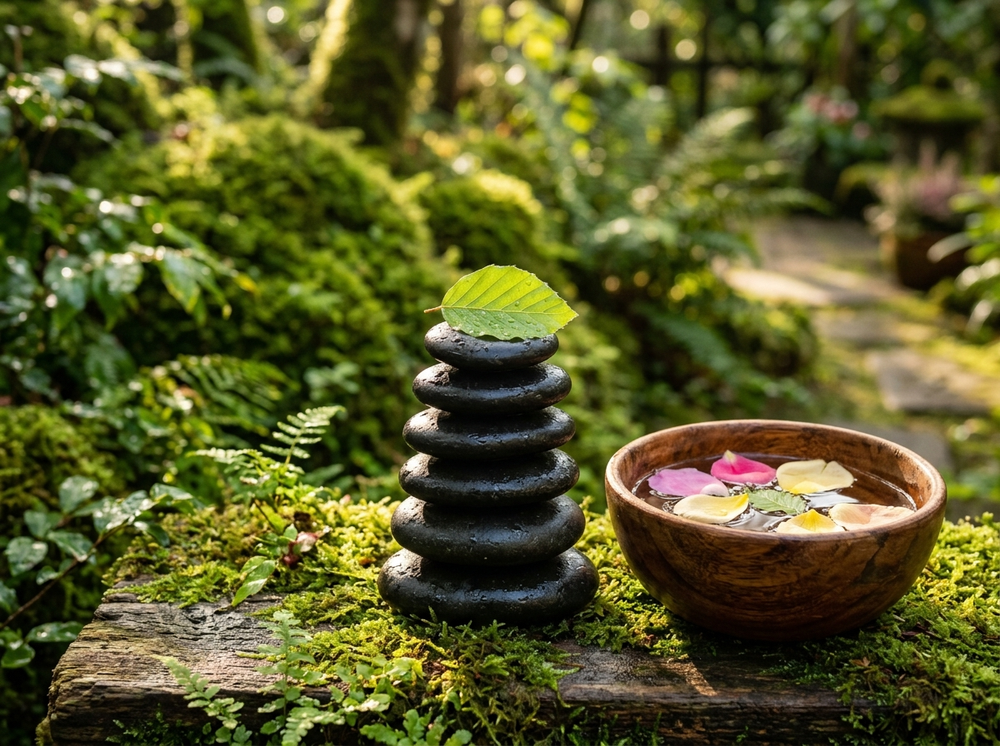

인공적인 일상에서 벗어나, 자연이 본래 간직한 치유의 힘을 발견해 보세요. 몸과 마음의 자가치유력을 깨우는 자연 요법과 일상의 작은 습관들을 제안합니다.

숲속의 아늑함
자연치유(Natural Healing)는 우리 몸이 가진 본래의 '자가치유력'과 '항상성'을 극대화하여 신체의 균형을 되찾아가는 건강 관리법입니다.
햇빛과 공기는 신진대사를 촉진하고 면역력을 강화하는 자연치유의 핵심 기둥입니다. 햇볕을 통한 비타민 D 합성은 뼈와 마음에 에너지를 공급합니다.
깨끗하고 순수한 물을 마시고, 인위적인 방부제나 화학 첨가물이 배제된 유기농 자연식품을 섭취함으로써 세포 본래의 정화 작용을 돕습니다.
스트레스는 항상성을 갹화시키는 주범입니다. 명상, 이완, 흙을 밟는 접지(Earthing) 등을 통해 자율신경계의 안정을 되찾아 신체를 조절합니다.
세계 여러 나라는 예로부터 고유의 자연적 환경과 인문학적 연구를 바탕으로 자연치유를 발전시켜 왔습니다. 오늘날에는 현대 의학의 한계를 보완하는 **통합 의학(Integrative Medicine)**의 핵심으로 자리잡고 있습니다.
인체를 대자연의 축소판으로 보고, 음양오행의 균형과 기(氣)의 원활한 흐름을 중시합니다. 약선(藥膳), 약초 요법, 명상, 기공 등이 대표적입니다.
독일의 **쿠어오르트(Kurort)** 제도는 국가 차원의 치유 휴양지 제도로, 의사의 처방에 따라 온천 요법, 기후 요법, 숲 치료를 의료 혜택으로 누립니다.
라이프스타일 의학과 자연 요법(Naturopathy)을 접목하여 과학적이고 체계적인 생활 관리, 영양 처방, 스트레스 완화 치료를 공식 교과로 운영합니다.

자연치유를 직접 오감으로 체험할 수 있는 힐링 공간과 전문 지식을 공부하고 연구할 수 있는 대표적인 교육 기관을 소개합니다.
경북 영주 / 예천 | 산림치유 시설과 치유 숲길, 스파를 보유한 세계 최대 규모의 산림 치유 공간.
전남 완도 | 해조류, 바닷물, 갯벌 머드 등 해양 자원을 활용하여 만성 피부 질환 및 근육 이완을 치유하는 센터.
전남 장성 | 거대한 편백나무 숲으로 둘러싸여 전국 최고의 피톤치드 방출량을 자랑하는 숲길 요법의 명소.
자연치유요법, 산림치유, 명상치유 및 심리치유에 관한 전문 연구와 실무 능력을 고루 갖춘 석사·박사 치유 전문가를 양성하는 선도 교육 과정.
자연치유학 전공 | 동양 의학, 아로마테라피, 대체의학 전반을 체계적이고 학술적으로 연구하는 대표 석사 과정.
산림치유 전문대학원 | 산림 환경이 인간의 심신에 미치는 생리적 영향 연구 및 산림치유지도사 양성을 목표로 함.
학사 학위 과정 | 요가 과학, 인도 전통 아유르베다 치유법 및 심신 명상 과학의 통합 학문을 교육.

인공물에 지쳐 건조해진 우리 몸을 일상 속에서 부드럽게 윤택하게 만드는 실천 지식입니다.
침엽수가 주로 발산하는 항균 물질 피톤치드는 코르티솔 분비를 줄여 긴장과 스트레스를 크게 낮춥니다.
맨발로 흙을 밟으면 체내의 유해 활성 산소가 땅의 자유 전자와 결합해 소멸되어 항염증 효과를 보입니다.
코로 깊게 들이마시며 배를 내밀고, 길게 내쉬며 가라앉히는 4-7-8 호흡은 부교감 신경을 활성화합니다.
오전 중 15분 이상 안구와 피부를 통해 햇빛을 충분히 쬐면 밤에 수면 호르몬인 멜라토닌 분비가 왕성해집니다.
당신의 나이와 성별에 부합하는 일상 속 10가지 건강치유 체크리스트입니다.
스스로 진단해 보고, 몸의 면역을 강화할 조언을 얻어 보세요.
점수에 맞는 자연치유 습관 관리 제안입니다.
이곳을 스쳐 간 여러분의 흔적과 자연치유에 대한 따스한 감상을 남겨주세요.